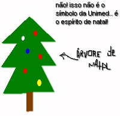

E como diria a musica:
"Cuelhinho, se eu fosse como tu,
arrumava esse sistema, ou tomava de novo no
CUelhinho... la la la"
|
Ainda esta meio cedo pro coelho da pascoa, entao o ideal eh uma carta - ops. somos hackos, vamos usar email - para o velho Noel (eu nem sabia, mas o cara se chama Nicolau.. Sao Nicolau.. Inacreditavel! Eh o mesmo nome daquele pobre juiz que esta sendo injustamente acusado de ter superfaturado uma obra aih em algum lugar, em alguns poucos milhares de dolares). Anyway, o mail do barrigudo de vermelho ( (c) Coca-Cola Company, diga-se de passagem) eh nicolau@polosul.net. |  |
Bahia, 15 de dezembro de 1999.
Querido Papai-Noel,
Nesse Natal, eu gostaria de pedir paz e amor para toda a minha Bahia. Que o o Sr. ilumine com amor os olhos daquele povo, e faca-os ver que eu sou a unica salvacao daquela Terra, que sem mim o Popoh morre de depressao, a Ford vai embora, e aquela garota nao vai nunca aprender a fazer um bom acarajeh sem salsicha. Merchandising time: - Oh! Camarao? Eu vai por uma salxixa!
Sei que nao tenho sido uma boa crianca ultimamente, e que apesar de sempre fazer todas as minhas refeicoes (o Sr. pode notar que estou em otima forma), nao tenho sido muito obediente. No entanto, o Sr. pode ver que eu dei meu maximo na tentativa de me tornar um ser melhor. Ateh me encontrar com o Lula eu fui! Eu to botanto pra quebrar nas CPIs - sei que eu tambem devia ter minhas contas bancarias revistadas, mas nao vamos exagerar neh?! - e dando uma bela faxina aqui por Brasilia. Ou seja, eu sou um cara legal! Eu sou bacana!
A minha listinha de pedidos para esse ano, eh bem humilde, coisa pouca.
Noel, desde jah agradeco a sua atencao.
beijoes,
A.C.M
MJ: muito legal o Procon.mdb. ficou lindo aqui de trofeu.
- dRS.